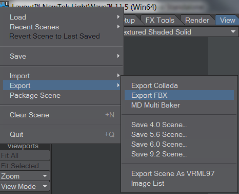

Thank you for helping us improve the quality of Unity Documentation. Although we cannot accept all submissions, we do read each suggested change from our users and will make updates where applicable.
For some reason your suggested change could not be submitted. Please try again in a few minutes. And thank you for taking the time to help us improve the quality of Unity Documentation.
You can import meshes and animations from Lightwave in two different ways:
Using the FBX plugin for Lightwave - Included from version 9.0
Importing lightwave scene files using the Lightwave App Link - Included from version 11.0
Unity currently imports:
All nodes with position, rotation and scale. Pivot points and Names are also imported.
Meshes with up to 2 UV Channels
Normals
Materials with Texture and diffuse color. Multiple materials per mesh.
Animations.
Bone-based animations.
Detailed documentation for this from Lightwave is not available on-line but comes in the PDF manual included with your download
Note:
Lightwave specific materials need to be baked as textures for Unity to read them - use the Node system in Lightwave for a non-destructive pipeline
Unity only understands polygon meshes so convert to polygons before saving/exporting
FBX Export
From Lightwave version 11 onwards the FBX 2012 exporter is now included:

FBX Filename : This file can contain multiple objects, Choose a filename and save to your \assets directory
Anim Layer : TBC
Type : Choose Binary to reduce filesize or ASCII for a text editable FBX
FBX Version Select 201200 from the drop down to ensure version 2012.1
Export : Select all the elements you wish to include - not cameras and lights are not read into Unity
Mesh type Choose Cage Subdivision if * otherwise choose subdivided to *
__Bake Motion Envelopes__TBC
Start frame / End frame
Scale Scene Set a scale for your scene applicable to match Unity
Importing LIghtwave scenes with AppLink
To read a lightwave scene you must use the Applink package provided with your Lightwave installation from version 11 onwards only
Setup
Browse to the \support\3rdparty_support\Unity3D folder in your LightWave3D installation
Copy LightWaveAppLink.unitypackage into \Unity installation folder within \Editor\Standard Packages folder
E.g. Windows C:\Program Files (x86)\Unity\Editor\Standard Packages (for machines running a 64-bit version of Windows)
or Mac: Applications/Unity/Standard Packages.
Create Unity Project for you lightwave scene
In Unity create a project e.g. UnityProject_name and check the LightWave AppLink package and any others you require for your project
Close Unity
Copy or Move your LightWave_Content folder and it’s directory structure into your UnityProject_name\AssetsSave your LWS file in the \assets folder
In lightwave make sure your scene file is has it’s content directory set to the new location in the unity project
Unity will then convert the LightWave scene to an FBX
Select the FBX of the scene and set your scale to 1.0 and Apply
Add converted FBX scene to your scene hierarchy
Update any Unity materials to set textures and shader types to try and match equivalent Lightwave shaders
Any changes to the FBX (lightwave scene assets) will only be stored in Unity, so this is a Uni-directional pipeline, but Unity will remember any material assignments and properties applied to the FBX scene even if you update from LightWave